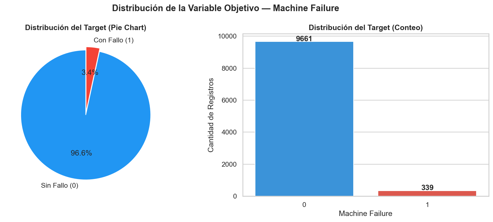
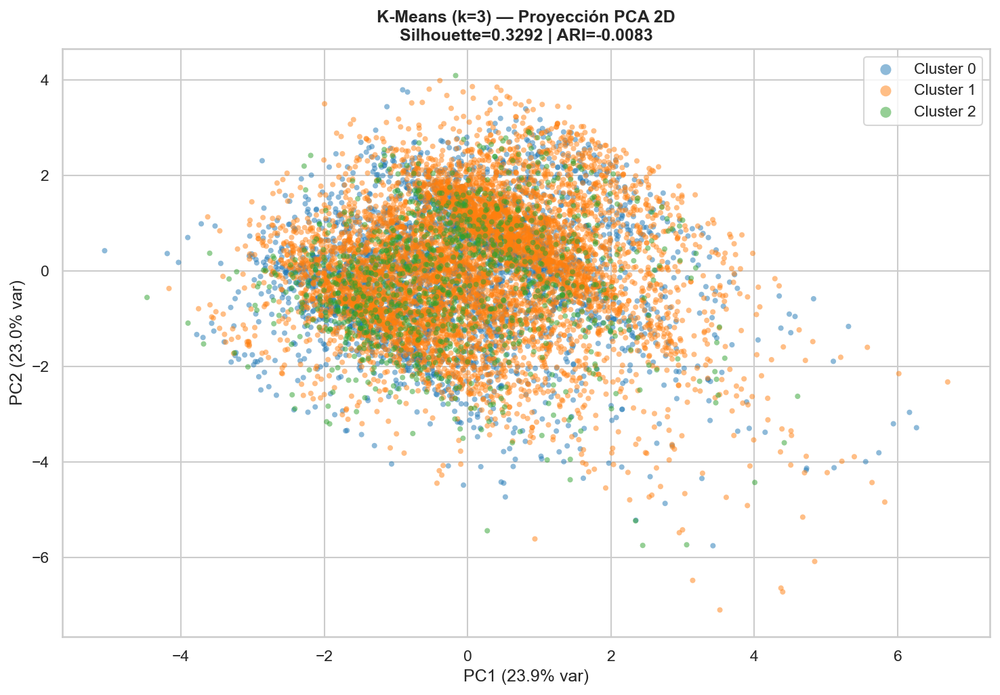
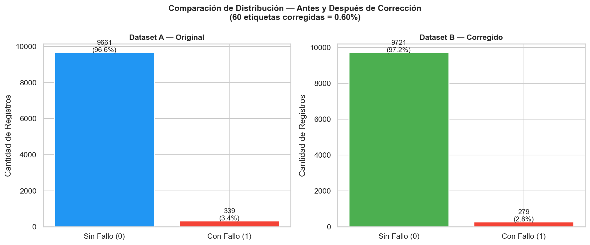
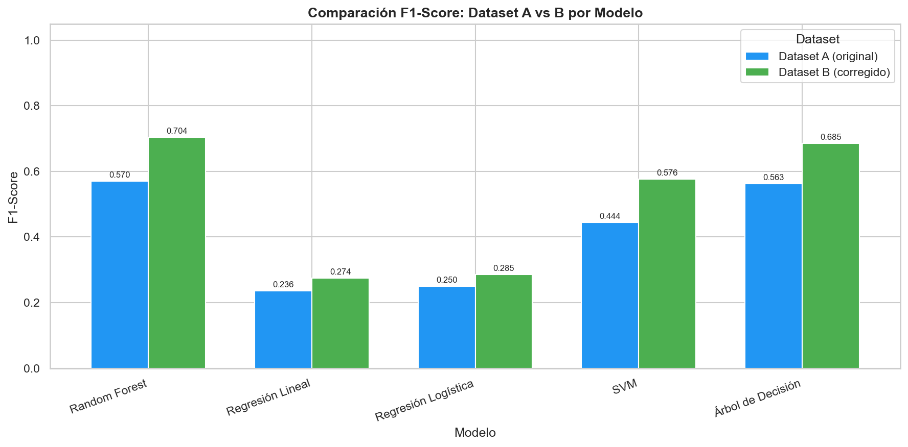
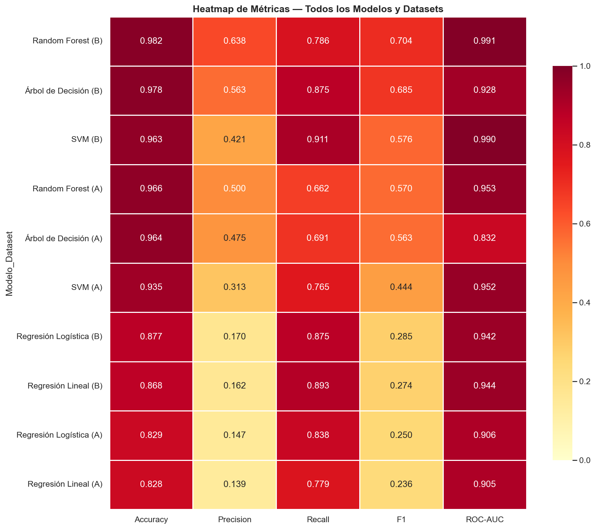

Desbalance Extremo: Contamos con 10,000 registros, pero solo 339 fallos (3.39%).
Matriz de Correlación: El Torque (0.191) y el Tool Wear (0.105) son las variables con mayor influencia directa.
El Reto (GIGO): Si el etiquetado manual humano incluyó "falsas alarmas", entrenar directamente sobre esto generará modelos sesgados.
Distribución de la Variable Objetivo

02. Auditoría No Supervisada (Clustering)
Evaluación de la Familia Cluster
Se corrieron pruebas ciegas (sin etiquetas) usando K-Means, Fuzzy C-Means, DBSCAN y Mean Shift.
El Ganador: K-Means (k=3) logró un Silhouette Score de 0.3292, identificando consistentemente 3 estados termodinámicos de la planta.
DBSCAN: Destacó por identificar zonas de ruido puro y outliers multivariables.
Proyección PCA: K-Means k=3

03. Purificación de Etiquetas (Label Cleaning)
Consenso: Clustering + Confident Learning
Cruzamos las asignaciones de K-Means con predicciones Out-of-Fold de un Random Forest base.
El Hallazgo: Descubrimos 60 registros (0.60%) etiquetados como "Falla" que físicamente operaban como máquinas normales (Prob < 0.20). Eran falsas alarmas.
Acción: Limpiamos el ruido reduciendo los fallos reales en el "Dataset B" de 339 a 279.
Dataset A (Original) vs Dataset B (Corregido)

04. Benchmark de Modelos Supervisados
Comparativa F1-Score: Dataset A vs B
Entrenamos modelos con SMOTE para compensar el desbalance de clases.
La gráfica demuestra empíricamente el valor de la limpieza: Todos los modelos sin excepción mejoraron su rendimiento al usar el Dataset B.

Heatmap de Métricas Generales

05. Conclusiones y Recomendaciones
Resumen del Experimento
Impacto del Ruido: Corregir apenas el 0.60% de las etiquetas (60 falsas alarmas) tuvo un impacto desproporcionado en la frontera de decisión.
El Modelo Ganador:Random Forest entrenado sobre el Dataset B es el modelo recomendado para producción.
El Salto Cuantitativo: Al limpiar la data, el Random Forest disparó su F1-Score de 0.5696 a 0.7040 (una mejora absoluta del 13.4%) y su AUC alcanzó 0.9913.
Reflexión Final: El aprendizaje no supervisado es un paso auditable obligatorio antes del entrenamiento supervisado industrial.